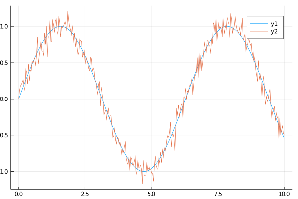

Noise.jl
Introduction
The purpose of this package is to provide several methods to add different kinds of noise to images or arrays.
Installation
Noise.jl is available for all version equal or above Julia 1.0. It is mainly tested under Linux but should also work on Windows. It and can be installed with the following command
julia> Pkt.update()
julia> Pkg.add("Noise")Usage
Currently, all methods are not working in place and return always a new array. In general, if images like Array{RGB{<:Normed} Array{Gray{<:Normed}} are given to a method, a new image with same type will be returned. The methods also work for normal Arrays like Array{<:Number}. At the moment three different types of noise are possible: Additive white Gaussian, Salt and Pepper and Poisson noise.
using Noise, TestImages, Images, Plots
img = testimage("fabio_gray_256")
img_color = testimage("fabio_color_256")
img_gray_gauss = add_gauss(img, 0.1)
img_color_gauss = add_gauss(img_color, 0.1)
img_gray_sp = salt_pepper(img, 0.1)
# 1D array
x = LinRange(0.0, 10.0, 300)
y = sin.(x)
# small noise
y_noise = add_gauss(y, 0.1)Downloading artifact: images
[?25l
0.0%
####### 10.7%
##################### 29.4%
#################################### 51.1%
######################################################### 80.0%
######################################################################## 100.0%
[1A[2K[?25h/home/runner/.julia/packages/GR/yMV3y/src/../deps/gr/bin/gksqt: error while loading shared libraries: libQt5Widgets.so.5: cannot open shared object file: No such file or directory
connect: Connection refused
GKS: can't connect to GKS socket application
GKS: Open failed in routine OPEN_WS
GKS: GKS not in proper state. GKS must be either in the state WSOP or WSAC in routine ACTIVATE_WSThe left gray image is affected by Gaussian noise with a standard deviation of $\sigma = 0.1$. In the image in the middle, we added Gaussian noise with the same standard deviation but to each individual color pixel giving the fluctuating color look. The image on the right is affected by salt and pepper noise by a probability of $10\%$
| Gray image with noise | RGB image with noise | Gray image with salt and pepper noise |
|---|---|---|
 |
This 1D array is affected by a additive gaussian white noise ($\sigma=0.1, \mu=0$). 
Overview
Look here for more details and arguments of each function.
- Additive White Gaussian
- Multiplicative White Gaussian
- Salt and Pepper
- Poisson
- Quantization
- Function References
Development
The package is developed at GitHub. There you can submit bug reports, propose new types of noise with pull requests, and make suggestions. We are very happy about new types of noise, which can be also very specific for some applications. The aim is to provide via Noise.jl a central package which can be used by many different types of application from Biology to Astronomy and Electrical Engineering.